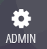
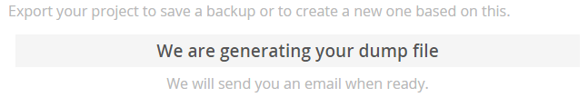
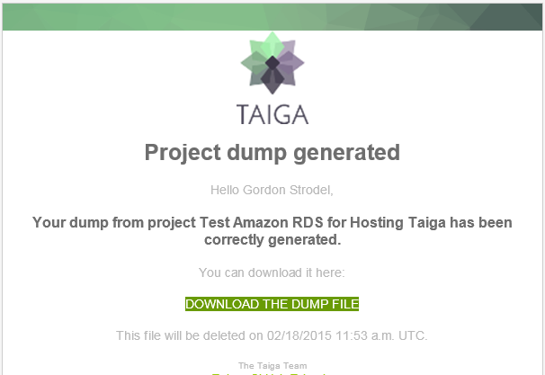
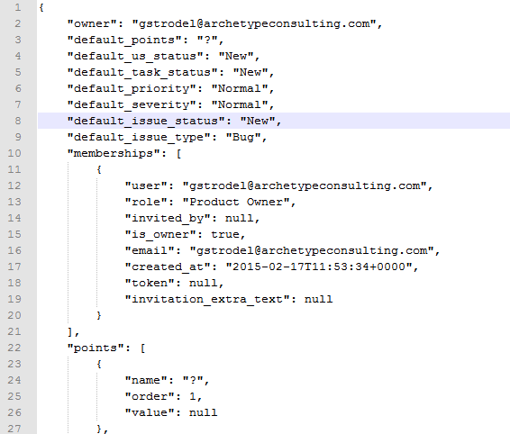
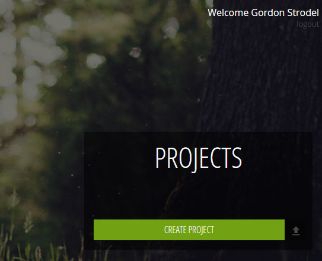
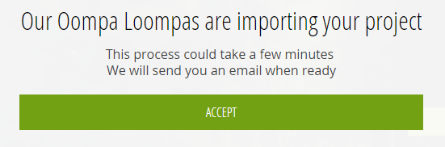
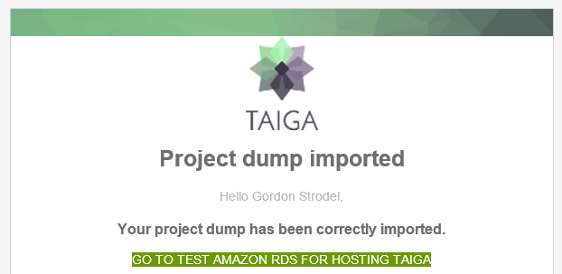

Import/Export projects
Taiga import/export feature allow you to extract all your data from one Taiga instance and move it to another one keeping.
Exporting a project
To export a project and download the "dump file" you have to:
- Log into Taiga.
- Open the Project you wish to export.
- Click the "Admin" menu icon.
 - In the center menu pane, click the option "Project Profile" > "Export."
- On the right-side of the screen, click the green "Export" button.

- If you are using "tree.taiga.io" or an asynchronously configured Taiga instance the export (dump) file will be generated by the server in asynchronous mode and you will receive an email once the export file has been generated.

 - If you are exporting from a local instance (or non-Taiga hosted) which is configured to work synchronously, you will see this screen. The JSON file should be downloaded automatically, and if not, you can always click the "here" in the link below.

- If you are using "tree.taiga.io" or an asynchronously configured Taiga instance the export (dump) file will be generated by the server in asynchronous mode and you will receive an email once the export file has been generated.
- Your Taiga JSON file looks something like this (if you decide to poke around—please don’t!):

Importing a project
Once you have a dump of your project, you can import it in other taiga instance.
- In your web browser, sign into the Taiga instance you wish to import the project into.
- On the main projects screen, click the "Upload" button to the right of "New Project." The button looks like an up-arrow with a line underneath it.
 - Depending on your instance (tree.taiga.io or an asynchronously configured Taiga instance), you might get a screen that looks like this:
 - Click "Accept" and wait for the email similar to the example below:
- Most likely, the import process will succeed and you will see the project appear on the main projects screen:
 - Open the project and plan/develop/succeed as you did before!
Notes on Project Importing
The project import in taiga doesn't migrate users, only project data, if you want to keep the users relation with the project correctly, you have to create the users before you import the project. Important, the matching of users with the import data will be done through case-sensitive email addresses.
If the import fails, please contact with support@taiga.io or ask through the Taiga Google Group: https://groups.google.com/forum/#!forum/taigaio